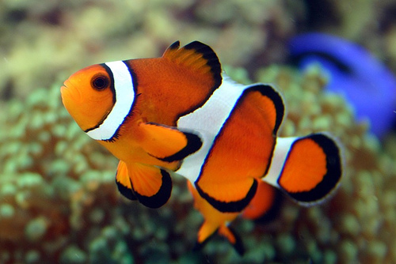

Saltwater Fish
| Name |
Description |
Price (per fish) |
Picture (click to view more) |
Clown Fish
S01 |
Overview
Clown fish is a small, brightly coloured species of fish found among tropical coral reefs. Among saltwater fish, it is one of the easiest species to keep and care for.
Living environment
It is found either in or around sea anemones which are used as protection and food.
Diet
Omnivorous and eats a wide range of food such as algae and plankton.
Breeding
The female clown fish lay their eggs on a flat surface close to the sea anemone they inhabit in. Depending on the particular species, it can lay hundreds or thousands of eggs at one time. Eggs are laid around the same time as the full moon. The male clown fish guards the eggs until they hatch just over a week later.
|
$31.40 |
 |
Butterfly Fish
S02 |
Overview
Butterfly fish is a salt-water species of fish that are found primarily around coral reefs. It is active in the day and rests in the night. An average butterfly fish is fairly small and generally grows up to around 4 to 5 inches in length. It can live up till around 8 to 10 years.
Living environment
It is difficult to keep as they need specific water conditions that need regular and close monitoring.
Diet
Mostly feeds on coral, sea anemones, plankton in the water, and occasionally snacks on small crustaceans.
Breeding
They form mating pairs that will remain for life. Eggs are released into the water which form part of the plankton, which is accidentally eaten by animals that live on plankton.
|
$32.00 |
|
Angel Fish
S03 |
Overview
With their bright colours and deep, laterally compressed bodies, marine angelfishes are some of the more conspicuous residents of the reef.
Living environment
Most marine angelfishes restrict themselves to the shallows of the reef, seldom venturing deeper than 50 m (160 ft).
Diet
Feeding habits can be strictly defined through genus, with Genicanthus species feeding on zoo plankton and Centropyge preferring filamentous algae.
Breeding
Angelfish are selective of their mates. When the mating pair has been formed, the male and female will chase other angelfish away from the section of the tank that they have claimed. They will choose a flat surface to lay their eggs on. The eggs are then hatched in about 5 days.
|
$70.00 |
|
Dory Fish
S04 |
Overview
The Dory Fish which belongs to the tang species, is a small to medium sized fish that is found in the warmer coastal waters of the tropics. Tangs are well know for their bright colours and are closely related to surgeon fish and unicorn fish.
Living environment
It is found around shallow coral reefs where there is an abundance of food and plenty of places to hide from approaching predators.
Diet
Predominantly vegetarian diet, feeding on algae and other plants around the coral reef.
Breeding
Tangs are known to breed all year round in the tropical regions, beginning with a male tang securing himself a temporary breeding territory that includes a pair or group of female tang.
|
$30.00 |
|
Click on picture to view another image